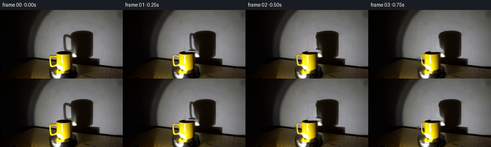
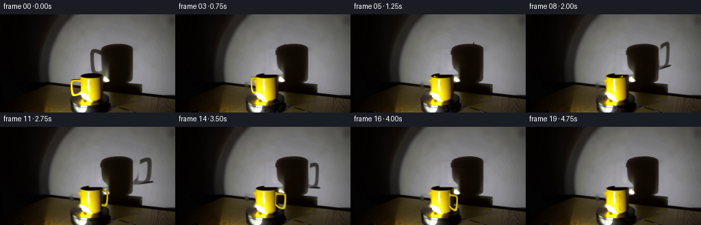
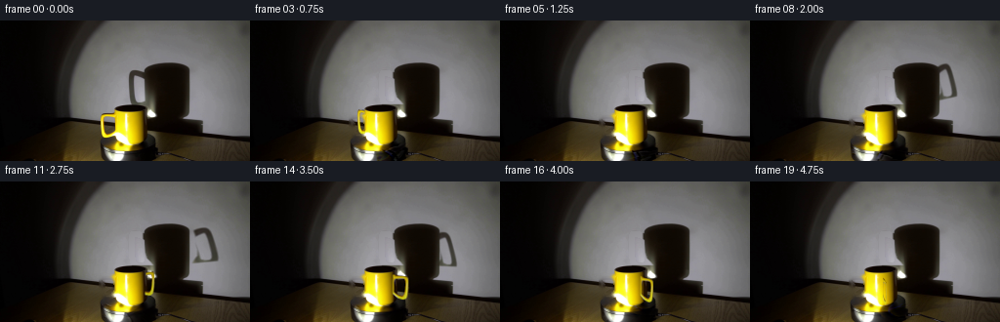
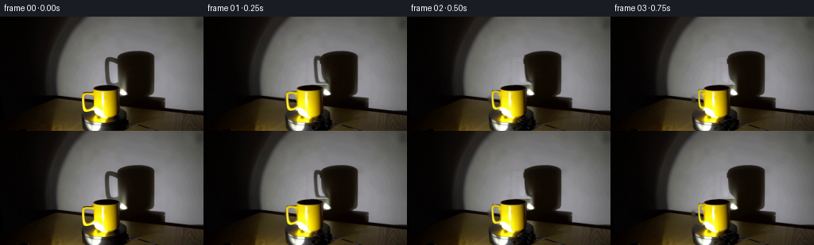

CODING AGENTS AS PIXEL WORLD MODELS
traex/GPT-6.1-Sol · 0078
点击播放 · 原生 RGB 像素
逐轮保存的候选
回放视频、检查图与代码变化。
每份候选均可单独播放。实际图片检查记录在下方工具轨迹中。
候选 01播放与检查图
点击播放 · 原生 RGB 像素


展开代码变化
--- 上一保存版本
+++ 本次保存版本
@@ -0,0 +1,161 @@
+from pathlib import Path
+import numpy as np
+import cv2
+from PIL import Image, ImageDraw
+from scipy.ndimage import gaussian_filter, map_coordinates
+import artifact_io
+
+ROOT=Path(__file__).resolve().parent
+W,H=256,144
+S=4
+im=np.array(Image.open(ROOT/'first_frame.png').convert('RGB'))
+A=im.astype(np.float32)
+yy,xx=np.mgrid[:H,:W].astype(np.float32)
+
+def bezier(p0,p1,p2,p3,n=20):
+ t=np.linspace(0,1,n)[:,None]
+ return (1-t)**3*np.array(p0)+3*(1-t)**2*t*np.array(p1)+3*(1-t)*t*t*np.array(p2)+t**3*np.array(p3)
+def contour(start,segments):
+ p=start; points=[p]
+ for a,b,c in segments:
+ points.extend(bezier(p,a,b,c)[1:]); p=c
+ return np.array(points)
+def raster(poly):
+ m=np.zeros((H*S,W*S),np.uint8)
+ cv2.fillPoly(m,[np.round(np.array(poly)*S).astype(np.int32)],255)
+ return cv2.resize(m,(W,H),interpolation=cv2.INTER_AREA).astype(np.float32)/255
+
+# The cylinder and all of the lighting remain fixed; only its handle is asymmetric.
+outer=contour((119.3,95.0),[
+ ((115,94.4),(105,93.8),(103.0,97.0)),
+ ((101.6,99.1),(102.8,113.8),(104.4,117.0)),
+ ((106.0,121.4),(112.2,120.1),(119.4,115.2)),
+ ((120.1,111.0),(120.0,102.0),(119.3,95.0))])
+inner=contour((117.0,100.6),[
+ ((113.2,98.6),(108.4,98.6),(106.6,100.1)),
+ ((105.6,102.0),(106.2,111.5),(107.4,114.2)),
+ ((108.4,117.2),(113.1,115.1),(117.7,112.0)),
+ ((118.1,108.6),(117.6,104.0),(117.0,100.6))])
+geom=np.maximum(raster(outer)-raster(inner),0)
+geom*=np.clip((119.4-xx)/1.2,0,1)
+# Cleanly key the ceramic against the gray wall and dark stage. The template
+# contains the photographed highlights, not an arbitrary flat yellow fill.
+key=np.clip((A[:,:,1]-A[:,:,2]-8)/42,0,1)
+handle_alpha=geom*key
+# A slightly larger restoration mask includes the photographed soft edge.
+remove=cv2.dilate((geom>.1).astype(np.uint8),np.ones((3,3),np.uint8))
+remove[(xx>=118.0)|(yy<94)|(yy>120)]=0
+clean=cv2.inpaint(im,remove,4,cv2.INPAINT_TELEA).astype(np.float32)
+# Continuity of the wall line through the handle's hole is best obtained with
+# a small patchwise, harmonic interpolation rather than blur of the mug.
+handle_rgb=(A-clean*(1-handle_alpha[:,:,None]))/np.maximum(handle_alpha[:,:,None],.06)
+handle_rgb=np.clip(handle_rgb,0,255)
+handle_rgb[handle_alpha<.04]=0
+
+# Isolate the soft hoop-shaped portion of the cast shadow. The main shadow
+# of the cylindrical cup is rotationally invariant and is kept photographed.
+# The unobscured wall is fitted locally, using only samples from this frame.
+wall_good=(xx>=105)&(xx<=226)&(yy>=43)&(yy<=97)
+wall_good &= ((xx<129)|(xx>200)|((xx>138)&(xx<146)&(yy>59)&(yy<79)))
+wall_good &= (A.mean(2)>90)&(A[:,:,2]>A[:,:,0]-14)
+x=(xx-167)/65; y=(yy-70)/35
+terms=np.stack([np.ones_like(x),x,y,x*x,x*y,y*y,x*x*x,x*x*y,x*y*y,y*y*y],axis=-1)
+coef=np.linalg.lstsq(terms[wall_good],A[wall_good],rcond=None)[0]
+wall=np.einsum('ijk,kl->ijl',terms,coef)
+# A local strip delineates the left part of the shadow, separate from its cup.
+cut=np.interp(yy[:,0],[48,52,58,64,72,78,82,86,89],[143,147,147,148,149,151,155,158,153])[:,None]
+window=np.clip((xx-128.5)/2,0,1)*np.clip((cut-xx)/2.2,0,1)
+window*=np.clip((yy-49.0)/2,0,1)*np.clip((89.0-yy)/2.0,0,1)
+# Preserve the original wall noise; the reconstruction is needed only where
+# the removed hoop actually darkens the wall.
+darkness=np.clip(1-(A.mean(2)-5)/np.maximum(wall.mean(2)-5,1),0,1)
+shadow_alpha=darkness*window
+# The baseline shadow's left penumbra is not part of the moving handle.
+shadow_alpha*=np.clip((wall.mean(2)-A.mean(2)-6)/18,0,1)
+shadow_clean=A.copy()
+shadow_clean = A*(1-window[:,:,None])+wall*window[:,:,None]
+# Avoid affecting bright hole/wall pixels.
+restore=window*np.clip((wall.mean(2)-A.mean(2)-4)/16,0,1)
+shadow_clean=A*(1-restore[:,:,None])+wall*restore[:,:,None]
+base=clean.copy()
+reg=(yy>=48)&(yy<90)&(xx>=128)&(xx<160)
+base[reg]=shadow_clean[reg]
+
+# Native high-resolution layers make the rotating silhouette stable even at
+# nearly edge-on angles. Tube thickness is retained by a minimum projection.
+def hi(a): return cv2.resize(a,(W*S,H*S),interpolation=cv2.INTER_CUBIC)
+halpha=hi(handle_alpha)
+hpremul=hi(handle_rgb*handle_alpha[:,:,None])
+shalpha=hi(shadow_alpha)
+
+# A small rotating grain on the black disk, below the fixed light reflection.
+gray=A.mean(2)
+low=gaussian_filter(A,(1.1,1.1,0))
+detail=A-low
+stage=((xx-132.0)/30)**2+((yy-132.5)/17.5)**2
+stage_mask=np.clip((1-stage)*5,0,1)*np.clip((yy-124.0)/3,0,1)*np.clip((85-gray)/32,0,1)
+stage_mask*=np.clip((xx-102)/3,0,1)*np.clip((163-xx)/3,0,1)
+
+Yh,Xh=np.mgrid[:H*S,:W*S].astype(np.float32)
+Xh/=S;Yh/=S
+
+def warp(layer,M):
+ Mh=M.copy().astype(np.float32); Mh[:,2]*=S
+ return cv2.warpAffine(layer,Mh,(W*S,H*S),flags=cv2.INTER_LINEAR,borderMode=cv2.BORDER_CONSTANT)
+
+def frame(theta):
+ c=np.cos(theta); s=np.sin(theta)
+ out=base.copy()
+ # Pixel-scale machining texture follows the material of the turning disk.
+ u=xx-132; v=(yy-132.5)/(.5833)
+ sx=132+c*u+s*v; sy=132.5+.5833*(-s*u+c*v)
+ moving=np.stack([map_coordinates(detail[:,:,j],[sy,sx],order=1,mode='nearest') for j in range(3)],-1)
+ out += (moving-detail)*stage_mask[:,:,None]*.7
+
+ # Projection to the wall includes depth parallax from the low, left light.
+ f=-(c-.62*s)
+ MS=np.array([[f,0,173*(1-f)],[-.31*s,1,173*.31*s]],np.float32)
+ sh=warp(shalpha,MS)
+ sh=cv2.GaussianBlur(sh,(0,0),.38*S)
+ sh=cv2.resize(sh,(W,H),interpolation=cv2.INTER_AREA)
+ sh*=np.clip((116-yy)/5,0,1)
+ # Existing cup shadow occludes the same light, so use union rather than
+ # making overlap twice as dark.
+ nonblack=np.clip((out.mean(2)-15)/70,0,1)
+ attenuation=sh*nonblack
+ out=out*(1-attenuation[:,:,None])+np.array([12,8,3])*attenuation[:,:,None]
+
+ # Plane of the hoop spins rigidly about the cup's vertical center line.
+ f=-c
+ if abs(f)<.115: f=.115 if f>=0 else -.115
+ MH=np.array([[f,0,132.7*(1-f)],[-.255*s,1,.255*s*132.7]],np.float32)
+ ha=warp(halpha,MH); hp=warp(hpremul,MH)
+ if s<0:
+ # The rear half of the handle is hidden by the opaque cup, including
+ # its elliptic rim. The tube emerges naturally around the side.
+ body_left=117.1+np.clip((Yh-95)/28,0,1)*.8
+ body_right=149.5-np.clip((Yh-95)/30,0,1)*1.5
+ in_x=np.clip((Xh-body_left+.25)/.8,0,1)*np.clip((body_right-Xh+.25)/.8,0,1)
+ in_y=np.clip((Yh-91.8)/1.0,0,1)*np.clip((126.1-Yh)/1.0,0,1)
+ visible=1-in_x*in_y
+ ha*=visible;hp*=visible[:,:,None]
+ # Side facing the low light is warmer/brighter; no change to static
+ # specular reflections on the axially symmetric cup wall.
+ lighting=np.clip(1-.22*(1+c)/2-.11*max(-s,0),.69,1.08)
+ hp*=lighting
+ ha=np.clip(cv2.resize(ha,(W,H),interpolation=cv2.INTER_AREA),0,1)
+ hp=cv2.resize(hp,(W,H),interpolation=cv2.INTER_AREA)
+ out=out*(1-ha[:,:,None])+hp
+ return np.clip(np.round(out),0,255).astype(np.uint8)
+
+frames=[im.copy()]
+# 9 rpm, clockwise as seen from above, at a constant real-time frame rate.
+for i in range(1,20):
+ frames.append(frame(np.pi+2*np.pi*(i/4)/6.6666667))
+frames=np.stack(frames)
+assert np.array_equal(frames[0],im)
+artifact_io.save(frames,ROOT)
+# Numerical intermediates for reproducible local inspection.
+Image.fromarray(np.clip(base,0,255).astype(np.uint8)).save(ROOT/'.tmp'/'clean_scene.png')
+Image.fromarray(np.uint8(handle_alpha*255)).save(ROOT/'.tmp'/'handle_alpha.png')
+Image.fromarray(np.uint8(shadow_alpha*255)).save(ROOT/'.tmp'/'shadow_alpha.png')
候选 02播放与检查图
点击播放 · 原生 RGB 像素

展开代码变化
--- 上一保存版本
+++ 本次保存版本
@@ -65,7 +65,7 @@
# A local strip delineates the left part of the shadow, separate from its cup.
cut=np.interp(yy[:,0],[48,52,58,64,72,78,82,86,89],[143,147,147,148,149,151,155,158,153])[:,None]
window=np.clip((xx-128.5)/2,0,1)*np.clip((cut-xx)/2.2,0,1)
-window*=np.clip((yy-49.0)/2,0,1)*np.clip((89.0-yy)/2.0,0,1)
+window*=np.clip((yy-49.0)/2,0,1)*np.clip((86.0-yy)/1.2,0,1)
# Preserve the original wall noise; the reconstruction is needed only where
# the removed hoop actually darkens the wall.
darkness=np.clip(1-(A.mean(2)-5)/np.maximum(wall.mean(2)-5,1),0,1)
@@ -78,7 +78,7 @@
restore=window*np.clip((wall.mean(2)-A.mean(2)-4)/16,0,1)
shadow_clean=A*(1-restore[:,:,None])+wall*restore[:,:,None]
base=clean.copy()
-reg=(yy>=48)&(yy<90)&(xx>=128)&(xx<160)
+reg=(yy>=48)&(yy<86)&(xx>=128)&(xx<160)
base[reg]=shadow_clean[reg]
# Native high-resolution layers make the rotating silhouette stable even at
@@ -114,7 +114,12 @@
# Projection to the wall includes depth parallax from the low, left light.
f=-(c-.62*s)
- MS=np.array([[f,0,173*(1-f)],[-.31*s,1,173*.31*s]],np.float32)
+ # Oblique illumination makes the center of the cast cylinder lean right
+ # with decreasing height. Mirror the hoop about this same center line.
+ pivot=170.0-.155*52
+ shear=.155
+ MS=np.array([[f,(1-f)*shear,pivot*(1-f)],
+ [-.21*s,1+.21*s*shear,pivot*.21*s]],np.float32)
sh=warp(shalpha,MS)
sh=cv2.GaussianBlur(sh,(0,0),.38*S)
sh=cv2.resize(sh,(W,H),interpolation=cv2.INTER_AREA)
@@ -136,7 +141,8 @@
body_left=117.1+np.clip((Yh-95)/28,0,1)*.8
body_right=149.5-np.clip((Yh-95)/30,0,1)*1.5
in_x=np.clip((Xh-body_left+.25)/.8,0,1)*np.clip((body_right-Xh+.25)/.8,0,1)
- in_y=np.clip((Yh-91.8)/1.0,0,1)*np.clip((126.1-Yh)/1.0,0,1)
+ top_y=90.3-4.1*np.sqrt(np.maximum(0,1-((Xh-133.3)/16.2)**2))
+ in_y=np.clip((Yh-top_y+.3)/.85,0,1)*np.clip((126.1-Yh)/1.0,0,1)
visible=1-in_x*in_y
ha*=visible;hp*=visible[:,:,None]
# Side facing the low light is warmer/brighter; no change to static
候选 03播放与检查图
候选 04播放与检查图
点击播放 · 原生 RGB 像素


展开代码变化
--- 上一保存版本
+++ 本次保存版本
@@ -86,7 +86,10 @@
def hi(a): return cv2.resize(a,(W*S,H*S),interpolation=cv2.INTER_CUBIC)
halpha=hi(handle_alpha)
hpremul=hi(handle_rgb*handle_alpha[:,:,None])
-shalpha=hi(shadow_alpha)
+shadow_tint=np.array([12,8,3],np.float32)
+shadow_alpha_rgb=np.clip((wall-A)/np.maximum(wall-shadow_tint,1),0,1)*window[:,:,None]
+shadow_alpha_rgb*=np.clip((wall.mean(2)-A.mean(2)-6)/18,0,1)[:,:,None]
+shalpha=hi(shadow_alpha_rgb)
# A small rotating grain on the black disk, below the fixed light reflection.
gray=A.mean(2)
@@ -123,12 +126,12 @@
sh=warp(shalpha,MS)
sh=cv2.GaussianBlur(sh,(0,0),.38*S)
sh=cv2.resize(sh,(W,H),interpolation=cv2.INTER_AREA)
- sh*=np.clip((116-yy)/5,0,1)
+ sh*=np.clip((116-yy)/5,0,1)[:,:,None]
# Existing cup shadow occludes the same light, so use union rather than
# making overlap twice as dark.
nonblack=np.clip((out.mean(2)-15)/70,0,1)
- attenuation=sh*nonblack
- out=out*(1-attenuation[:,:,None])+np.array([12,8,3])*attenuation[:,:,None]
+ attenuation=np.clip(sh,0,1)*nonblack[:,:,None]
+ out=out*(1-attenuation)+shadow_tint*attenuation
# Plane of the hoop spins rigidly about the cup's vertical center line.
f=-c
可观测工具轨迹
实际执行的命令与返回图片。
命令 1exit 0
/bin/bash -lc "ls -la && cat prompt.txt && printf '\\n---RULES---\\n' && cat GENERATION_RULES.md"
命令 2exit 0
/bin/bash -lc "cat artifact_io.py && python - <<'PY'
from PIL import Image
import numpy as np
im=np.array(Image.open('first_frame.png'))
print('shape',im.shape)
for y in range(0,144,3):
s=''
for x in range(0,256,3):
r,g,b=map(int,im[y:y+3,x:x+3].mean((0,1)))
if r>100 and g>65 and b<.7*g: c='Y'
elif max(r,g,b)<30:c='#'
elif max(r,g,b)<60:c='O'
elif max(r,g,b)<90:c='o'
elif max(r,g,b)<120:c=':'
elif max(r,g,b)<150:c='-'
elif max(r,g,b)<180:c='='
elif max(r,g,b)<210:c='+'
else:c='.'
s+=c
print(f'{y:3} {s}')
PY"命令 3exit 0
/bin/bash -lc "python - <<'PY'
from PIL import Image
import numpy as np
from scipy.ndimage import label
A=np.array(Image.open('first_frame.png')); r,g,b=A.transpose(2,0,1).astype(float)
mask=(r>g*1.2)&(g>b*1.6)&(r>85)
l,n=label(mask)
for i in range(1,n+1):
y,x=np.where(l==i)
if len(y)>4: print('yellow region',len(y),(x.min(),y.min(),x.max(),y.max()),'mean',A[y,x].mean(0))
# 2 pixels per char explicit hue and luminance
for y in range(40,144,2):
s=''
for x in range(90,210):
r,g,b=map(float,A[y,x]); v=(r+g+b)/3
if r>g*1.2 and g>b*1.5 and r>70: c='Y' if r>150 else 'y'
elif r+g>3*b and r>80:c='t'
elif v<15:c='@'
elif v<25:c='#'
elif v<40:c='O'
elif v<55:c='o'
elif v<70:c=':'
elif v<85:c='-'
elif v<100:c='='
elif v<120:c='+'
elif v<160:c='*'
elif v<200:c='X'
else:c='.'
s+=c
print(f'{y:3} {s}')
print('RGB rows center')
for y in range(82,144,4):
print(y,[(x,A[y,x].tolist()) for x in range(110,155,4)])
PY"命令 4exit 0
/bin/bash -lc "python - <<'PY'
import numpy as np
from PIL import Image
A=np.array(Image.open('first_frame.png'))
for y in range(84,144):
# display x98..160 categories with yellow defined correct incl bright yellow
s=''
for x in range(98,161):
r,g,b=map(int,A[y,x]); v=(r+g+b)/3
if r>75 and g>55 and g>b*1.65 and r>g*1.02: c='Y' if r>140 else 'y'
elif min(r,g,b)>220:c='W'
elif r>190 and g>180 and b>110:c='H'
elif v>150:c='L'
elif v>110:c='+'
elif v>80:c='='
elif v>60:c=':'
elif v>40:c='o'
elif v>25:c='O'
elif v>12:c='#'
else:c='@'
s+=c
print(y,s)
PY"命令 5exit 0
/bin/bash -lc "python - <<'PY'
from PIL import Image
import numpy as np
A=np.array(Image.open('first_frame.png'));V=A.mean(2)
for y in range(96,144,3):
print(y,' '.join(f'{int(V[y,x]):3}' for x in range(40,241,5)))
print('dark boundary wall')
for y in range(42,116,2):
idx=np.where(V[y,125:205]<40)[0]+125
print(y, (idx.min(),idx.max()) if len(idx) else '', [(x,tuple(A[y,x])) for x in [128,132,136,140,148,152,156,164,188,194,200]])
PY"命令 6exit 0
/bin/bash -lc "python - <<'PY'
import numpy as np
from PIL import Image
A=np.array(Image.open('first_frame.png'))
for y in [48,50,52,54,56,58,60,64,68,72,76,80,84,86,90,96,100,104,108,112,116,120,124,126,128]:
print(y, ' '.join(f'{x}:{int(A[y,x].mean())}' for x in range(100 if y>86 else 125,164,2)))
PY"命令 7exit 0
/bin/bash -lc "python - <<'PY'
from PIL import Image
import numpy as np
A=np.array(Image.open('first_frame.png'))
for y in range(92,122):
print(y,' '.join(f'{x}:{A[y,x,0]:3},{A[y,x,1]:3},{A[y,x,2]:3}' for x in range(101,121)))
PY"命令 8exit 0
/bin/bash -lc "python - <<'PY' import cv2, scipy print(cv2.__version__,scipy.__version__) PY"
命令 9exit 0
/bin/bash -lc "python - <<'PY'
import numpy as np
from PIL import Image
A=np.array(Image.open('first_frame.png'))
# source mug / handle color yellow minus cyan no B avg classification full resolution
for y in range(82,134):
s=''
for x in range(95,163):
r,g,b=map(float,A[y,x]); v=(r+g+b)/3
if (r>g+6 and g>b+20) or (g>b+45):c='M' if r>180 else 'm'
elif min(r,g,b)>230:c='W'
elif max(r,g,b)-min(r,g,b)>20 and v>150:c='H'
elif v>140:c='.'
elif v>105:c='+'
elif v>65:c='-'
elif v>30:c='o'
elif v>13:c='#'
else:c='@'
s+=c
print(y,s)
PY"命令 10exit 0
/bin/bash -lc "cat > generate.py <<'PY'
from pathlib import Path
import numpy as np
import cv2
from PIL import Image, ImageDraw
from scipy.ndimage import gaussian_filter, map_coordinates
import artifact_io
ROOT=Path(__file__).resolve().parent
W,H=256,144
S=4
im=np.array(Image.open(ROOT/'first_frame.png').convert('RGB'))
A=im.astype(np.float32)
yy,xx=np.mgrid[:H,:W].astype(np.float32)
def bezier(p0,p1,p2,p3,n=20):
t=np.linspace(0,1,n)[:,None]
return (1-t)**3*np.array(p0)+3*(1-t)**2*t*np.array(p1)+3*(1-t)*t*t*np.array(p2)+t**3*np.array(p3)
def contour(start,segments):
p=start; points=[p]
for a,b,c in segments:
points.extend(bezier(p,a,b,c)[1:]); p=c
return np.array(points)
def raster(poly):
m=np.zeros((H*S,W*S),np.uint8)
cv2.fillPoly(m,[np.round(np.array(poly)*S).astype(np.int32)],255)
return cv2.resize(m,(W,H),interpolation=cv2.INTER_AREA).astype(np.float32)/255
# The cylinder and all of the lighting remain fixed; only its handle is asymmetric.
outer=contour((119.3,95.0),[
((115,94.4),(105,93.8),(103.0,97.0)),
((101.6,99.1),(102.8,113.8),(104.4,117.0)),
((106.0,121.4),(112.2,120.1),(119.4,115.2)),
((120.1,111.0),(120.0,102.0),(119.3,95.0))])
inner=contour((117.0,100.6),[
((113.2,98.6),(108.4,98.6),(106.6,100.1)),
((105.6,102.0),(106.2,111.5),(107.4,114.2)),
((108.4,117.2),(113.1,115.1),(117.7,112.0)),
((118.1,108.6),(117.6,104.0),(117.0,100.6))])
geom=np.maximum(raster(outer)-raster(inner),0)
geom*=np.clip((119.4-xx)/1.2,0,1)
# Cleanly key the ceramic against the gray wall and dark stage. The template
# contains the photographed highlights, not an arbitrary flat yellow fill.
key=np.clip((A[:,:,1]-A[:,:,2]-8)/42,0,1)
handle_alpha=geom*key
# A slightly larger restoration mask includes the photographed soft edge.
remove=cv2.dilate((geom>.1).astype(np.uint8),np.ones((3,3),np.uint8))
remove[(xx>=118.0)|(yy<94)|(yy>120)]=0
clean=cv2.inpaint(im,remove,4,cv2.INPAINT_TELEA).astype(np.float32)
# Continuity of the wall line through the handle's hole is best obtained with
# a small patchwise, harmonic interpolation rather than blur of the mug.
handle_rgb=(A-clean*(1-handle_alpha[:,:,None]))/np.maximum(handle_alpha[:,:,None],.06)
handle_rgb=np.clip(handle_rgb,0,255)
handle_rgb[handle_alpha<.04]=0
# Isolate the soft hoop-shaped portion of the cast shadow. The main shadow
# of the cylindrical cup is rotationally invariant and is kept photographed.
# The unobscured wall is fitted locally, using only samples from this frame.
wall_good=(xx>=105)&(xx<=226)&(yy>=43)&(yy<=97)
wall_good &= ((xx<129)|(xx>200)|((xx>138)&(xx<146)&(yy>59)&(yy<79)))
wall_good &= (A.mean(2)>90)&(A[:,:,2]>A[:,:,0]-14)
x=(xx-167)/65; y=(yy-70)/35
terms=np.stack([np.ones_like(x),x,y,x*x,x*y,y*y,x*x*x,x*x*y,x*y*y,y*y*y],axis=-1)
coef=np.linalg.lstsq(terms[wall_good],A[wall_good],rcond=None)[0]
wall=np.einsum('ijk,kl->ijl',terms,coef)
# A local strip delineates the left part of the shadow, separate from its cup.
cut=np.interp(yy[:,0],[48,52,58,64,72,78,82,86,89],[143,147,147,148,149,151,155,158,153])[:,None]
window=np.clip((xx-128.5)/2,0,1)*np.clip((cut-xx)/2.2,0,1)
window*=np.clip((yy-49.0)/2,0,1)*np.clip((89.0-yy)/2.0,0,1)
# Preserve the original wall noise; the reconstruction is needed only where
# the removed hoop actually darkens the wall.
darkness=np.clip(1-(A.mean(2)-5)/np.maximum(wall.mean(2)-5,1),0,1)
shadow_alpha=darkness*window
# The baseline shadow's left penumbra is not part of the moving handle.
shadow_alpha*=np.clip((wall.mean(2)-A.mean(2)-6)/18,0,1)
shadow_clean=A.copy()
shadow_clean = A*(1-window[:,:,None])+wall*window[:,:,None]
# Avoid affecting bright hole/wall pixels.
restore=window*np.clip((wall.mean(2)-A.mean(2)-4)/16,0,1)
shadow_clean=A*(1-restore[:,:,None])+wall*restore[:,:,None]
base=clean.copy()
reg=(yy>=48)&(yy<90)&(xx>=128)&(xx<160)
base[reg]=shadow_clean[reg]
# Native high-resolution layers make the rotating silhouette stable even at
# nearly edge-on angles. Tube thickness is retained by a minimum projection.
def hi(a): return cv2.resize(a,(W*S,H*S),interpolation=cv2.INTER_CUBIC)
halpha=hi(handle_alpha)
hpremul=hi(handle_rgb*handle_alpha[:,:,None])
shalpha=hi(shadow_alpha)
# A small rotating grain on the black disk, below the fixed light reflection.
gray=A.mean(2)
low=gaussian_filter(A,(1.1,1.1,0))
detail=A-low
stage=((xx-132.0)/30)**2+((yy-132.5)/17.5)**2
stage_mask=np.clip((1-stage)*5,0,1)*np.clip((yy-124.0)/3,0,1)*np.clip((85-gray)/32,0,1)
stage_mask*=np.clip((xx-102)/3,0,1)*np.clip((163-xx)/3,0,1)
Yh,Xh=np.mgrid[:H*S,:W*S].astype(np.float32)
Xh/=S;Yh/=S
def warp(layer,M):
Mh=M.copy().astype(np.float32); Mh[:,2]*=S
return cv2.warpAffine(layer,Mh,(W*S,H*S),flags=cv2.INTER_LINEAR,borderMode=cv2.BORDER_CONSTANT)
def frame(theta):
c=np.cos(theta); s=np.sin(theta)
out=base.copy()
# Pixel-scale machining texture follows the material of the turning disk.
u=xx-132; v=(yy-132.5)/(.5833)
sx=132+c*u+s*v; sy=132.5+.5833*(-s*u+c*v)
moving=np.stack([map_coordinates(detail[:,:,j],[sy,sx],order=1,mode='nearest') for j in range(3)],-1)
out += (moving-detail)*stage_mask[:,:,None]*.7
# Projection to the wall includes depth parallax from the low, left light.
f=-(c-.62*s)
MS=np.array([[f,0,173*(1-f)],[-.31*s,1,173*.31*s]],np.float32)
sh=warp(shalpha,MS)
sh=cv2.GaussianBlur(sh,(0,0),.38*S)
sh=cv2.resize(sh,(W,H),interpolation=cv2.INTER_AREA)
sh*=np.clip((116-yy)/5,0,1)
# Existing cup shadow occludes the same light, so use union rather than
# making overlap twice as dark.
nonblack=np.clip((out.mean(2)-15)/70,0,1)
attenuation=sh*nonblack
out=out*(1-attenuation[:,:,None])+np.array([12,8,3])*attenuation[:,:,None]
# Plane of the hoop spins rigidly about the cup's vertical center line.
f=-c
if abs(f)<.115: f=.115 if f>=0 else -.115
MH=np.array([[f,0,132.7*(1-f)],[-.255*s,1,.255*s*132.7]],np.float32)
ha=warp(halpha,MH); hp=warp(hpremul,MH)
if s<0:
# The rear half of the handle is hidden by the opaque cup, including
# its elliptic rim. The tube emerges naturally around the side.
body_left=117.1+np.clip((Yh-95)/28,0,1)*.8
body_right=149.5-np.clip((Yh-95)/30,0,1)*1.5
in_x=np.clip((Xh-body_left+.25)/.8,0,1)*np.clip((body_right-Xh+.25)/.8,0,1)
in_y=np.clip((Yh-91.8)/1.0,0,1)*np.clip((126.1-Yh)/1.0,0,1)
visible=1-in_x*in_y
ha*=visible;hp*=visible[:,:,None]
# Side facing the low light is warmer/brighter; no change to static
# specular reflections on the axially symmetric cup wall.
lighting=np.clip(1-.22*(1+c)/2-.11*max(-s,0),.69,1.08)
hp*=lighting
ha=np.clip(cv2.resize(ha,(W,H),interpolation=cv2.INTER_AREA),0,1)
hp=cv2.resize(hp,(W,H),interpolation=cv2.INTER_AREA)
out=out*(1-ha[:,:,None])+hp
return np.clip(np.round(out),0,255).astype(np.uint8)
frames=[im.copy()]
# 9 rpm, clockwise as seen from above, at a constant real-time frame rate.
for i in range(1,20):
frames.append(frame(np.pi+2*np.pi*(i/4)/6.6666667))
frames=np.stack(frames)
assert np.array_equal(frames[0],im)
artifact_io.save(frames,ROOT)
# Numerical intermediates for reproducible local inspection.
Image.fromarray(np.clip(base,0,255).astype(np.uint8)).save(ROOT/'.tmp'/'clean_scene.png')
Image.fromarray(np.uint8(handle_alpha*255)).save(ROOT/'.tmp'/'handle_alpha.png')
Image.fromarray(np.uint8(shadow_alpha*255)).save(ROOT/'.tmp'/'shadow_alpha.png')
PY
python generate.py"命令 11exit 0
/bin/bash -lc "python - <<'PY'
import generate as g
import numpy as np
from PIL import Image
f0=g.frame(np.pi)
D=np.abs(f0.astype(float)-g.A).mean(2)
print('baseline diff mean all',D.mean(),'handle',D[94:121,101:119].mean(),'shadow',D[49:88,129:160].mean(), 'body',D[87:125,118:148].mean())
print('wall fitted')
for y,x in [(53,134),(60,133),(74,135),(84,139),(70,140),(65,145),(68,150),(85,154)]: print((x,y),g.A[y,x],g.wall[y,x],g.shadow_alpha[y,x],g.base[y,x],f0[y,x])
print('frame changes')
F=np.stack([np.array(Image.open(f'frames/{i:02d}.png')) for i in range(20)])
for i in range(20):
d=np.abs(F[i].astype(float)-g.A).mean(2)
print(i,round(d.mean(),2),round(d[85:125,100:163].mean(),2),round(d[48:88,130:200].mean(),2), 'delta',round(np.abs(F[i].astype(float)-F[max(0,i-1)].astype(float)).mean(),2))
for k in [0,1,4,7,10,13,16,19]:
print('\\nFRAME',k,'Mug')
B=F[k]
for y in range(90,123,2):
s=''
for x in range(100,164):
r,gg,b=map(float,B[y,x]);v=(r+gg+b)/3
if (r>gg+6 and gg>b+20) or (gg>b+45):c='M' if r>180 else 'm'
elif min(r,gg,b)>230:c='W'
elif max(r,gg,b)-min(r,gg,b)>20 and v>150:c='H'
elif v>140:c='.'
elif v>105:c='+'
elif v>65:c='-'
elif v>30:c='o'
elif v>13:c='#'
else:c='@'
s+=c
print(y,s)
PY"命令 12exit 0
/bin/bash -lc "python - <<'PY'
from PIL import Image
import numpy as np
for k in [0,1,3,6,8,10,13,16,19]:
B=np.array(Image.open(f'frames/{k:02d}.png'));V=B.mean(2)
print('\\nShadow',k)
for y in range(43,89,2):
s=''
for x in range(126,212):
v=V[y,x]
s+='@' if v<15 else '#' if v<30 else 'O' if v<48 else 'o' if v<67 else ':' if v<89 else '-' if v<113 else '+' if v<137 else '.'
print(f'{y:2}',s)
PY"命令 13exit 0
/bin/bash -lc "python - <<'PY'
p='generate.py'
s=open(p).read()
s=s.replace(\"window*=np.clip((yy-49.0)/2,0,1)*np.clip((89.0-yy)/2.0,0,1)\",\"window*=np.clip((yy-49.0)/2,0,1)*np.clip((86.0-yy)/1.2,0,1)\")
s=s.replace(\"reg=(yy>=48)&(yy<90)&(xx>=128)&(xx<160)\",\"reg=(yy>=48)&(yy<86)&(xx>=128)&(xx<160)\")
s=s.replace(\"MS=np.array([[f,0,173*(1-f)],[-.31*s,1,173*.31*s]],np.float32)\",\"# Oblique illumination makes the center of the cast cylinder lean right\\n # with decreasing height. Mirror the hoop about this same center line.\\n pivot=170.0-.155*52\\n shear=.155\\n MS=np.array([[f,(1-f)*shear,pivot*(1-f)],\\n [-.21*s,1+.21*s*shear,pivot*.21*s]],np.float32)\")
s=s.replace(\"in_y=np.clip((Yh-91.8)/1.0,0,1)*np.clip((126.1-Yh)/1.0,0,1)\",\"top_y=90.3-4.1*np.sqrt(np.maximum(0,1-((Xh-133.3)/16.2)**2))\\n in_y=np.clip((Yh-top_y+.3)/.85,0,1)*np.clip((126.1-Yh)/1.0,0,1)\")
open(p,'w').write(s)
PY
python generate.py
python - <<'PY'
from PIL import Image
import numpy as np
for k in [1,7,9,12,15]:
B=np.array(Image.open(f'frames/{k:02d}.png'));V=B.mean(2)
print('\\nShadow',k)
for y in range(48,87,3):
s=''
for x in range(125,221):
v=V[y,x]
s+='@' if v<15 else '#' if v<30 else 'O' if v<48 else 'o' if v<67 else ':' if v<89 else '-' if v<113 else '+' if v<137 else '.'
print(y,s)
PY"命令 14exit 0
/bin/bash -lc "python - <<'PY'
import numpy as np
from PIL import Image
A=np.array(Image.open('first_frame.png'))
for k in [1,2,4,7,8,11,14,18,19]:
B=np.array(Image.open(f'frames/{k:02d}.png'))
print('frame',k,'hoop pixels above rim: ',[(x,y) for y in range(84,90) for x in range(116,150) if B[y,x,1]-A[y,x,1]>25][:10])
for k in [0,1,4,7,10,13,16,19]:
B=np.array(Image.open(f'frames/{k:02d}.png'));print('frame',k,'changes total',np.count_nonzero(np.any(B"'!=A,2)))
PY
ls -lh pixels.npz index.html generate.py'命令 15exit 0
/bin/bash -lc "python - <<'PY'
import numpy as np
from PIL import Image
A=np.array(Image.open('first_frame.png'))
for y in range(94,120):
good=(A[y,:,1].astype(float)-A[y,:,2]>65)&(A[y,:,0]>105)
print(y,np.where(good[101:118])[0]+101)
PY"命令 16exit 0
/bin/bash -lc "python - <<'PY'
p='generate.py';s=open(p).read()
s=s.replace(\"shalpha=hi(shadow_alpha)\",\"shadow_tint=np.array([12,8,3],np.float32)\\nshadow_alpha_rgb=np.clip((wall-A)/np.maximum(wall-shadow_tint,1),0,1)*window[:,:,None]\\nshadow_alpha_rgb*=np.clip((wall.mean(2)-A.mean(2)-6)/18,0,1)[:,:,None]\\nshalpha=hi(shadow_alpha_rgb)\")
s=s.replace(\"sh*=np.clip((116-yy)/5,0,1)\",\"sh*=np.clip((116-yy)/5,0,1)[:,:,None]\")
s=s.replace(\"attenuation=sh*nonblack\\n out=out*(1-attenuation[:,:,None])+np.array([12,8,3])*attenuation[:,:,None]\", \"attenuation=np.clip(sh,0,1)*nonblack[:,:,None]\\n out=out*(1-attenuation)+shadow_tint*attenuation\")
open(p,'w').write(s)
PY
python generate.py
python - <<'PY'
import numpy as np
from PIL import Image
A=np.array(Image.open('first_frame.png'))
F=np.stack([np.array(Image.open(f'frames/{i:02d}.png')) for i in range(20)])
print(F.shape,F.dtype,'frame00 exact',np.array_equal(F[0],A),'distinct frames',len(np.unique(F.reshape(20,-1),axis=0)))
print('npz',np.load('pixels.npz')['pixels'].shape)
PY"保存候选 4 份；完成命令 16 次；可验证图片返回 0 张。原始 API 响应与完整日志保留在本地。